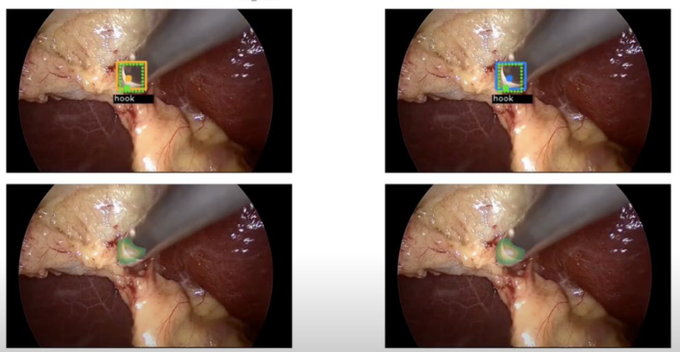

Da Vinci surgical robot

Published Wed 06 September 2023
Computer-assisted surgery (CAS) has ushered in a transformative era for minimally invasive procedures, with the DaVinci Surgical System leading the way as a state-of-the-art robotic surgical platform. This remarkable technology has not only pushed the boundaries of surgical precision but has also significantly reduced invasiveness, resulting in faster patient recovery times. What sets CAS apart is its seamless integration of innovative approaches, particularly deep learning.
This project represents an in-depth exploration of the numerous AI applications within the DaVinci system. It delves into various aspects of surgical advancement, including surgical image analysis, surgical task analysis, surgical skill assessment, and the emerging field of automated surgical procedures. These AI-driven components collectively enhance the capabilities of the DaVinci system, positioning it as a crucial catalyst in the evolution of surgical practices.
By leveraging the power of deep learning and AI techniques, we aim to unlock new possibilities in surgical procedures. Through advanced surgical image analysis, we can extract vital information from intraoperative images, aiding surgeons in making informed decisions and improving surgical outcomes. Surgical task analysis allows us to break down complex procedures into discrete steps, facilitating training and enhancing surgical efficiency. Additionally, the development of AI-driven surgical skill assessment tools enables objective evaluation and feedback, fostering continuous improvement among surgeons.
Furthermore, the automation of surgical procedures holds immense promise. By integrating AI algorithms and robotic capabilities, we aim to develop advanced systems that can assist or even autonomously perform certain surgical tasks. This groundbreaking approach has the potential to revolutionize surgical practice, ensuring consistent precision and reducing the burden on surgeons.
Through this comprehensive exploration of AI applications, we strive to advance the field of CAS and contribute to the ongoing transformation of surgical practices. By harnessing the potential of deep learning and innovative technologies, we aim to improve patient outcomes, enhance surgical efficiency, and shape the future of minimally invasive surgery.
Project leaders
PUJUNFENG
Partner Organisations
上海交通大学附属仁济医院
Project Example

Surgical tools detection and Segmentation